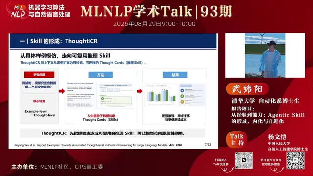
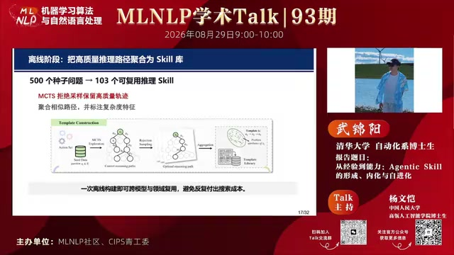
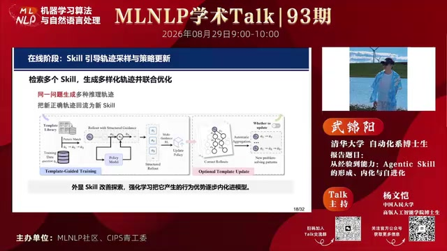
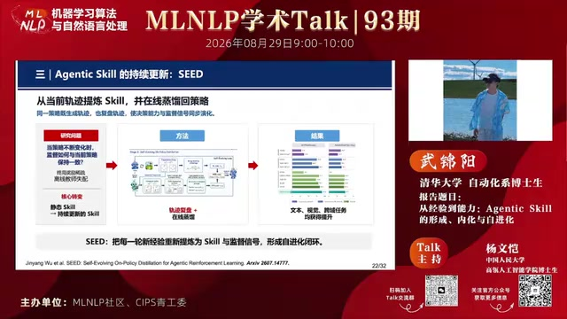
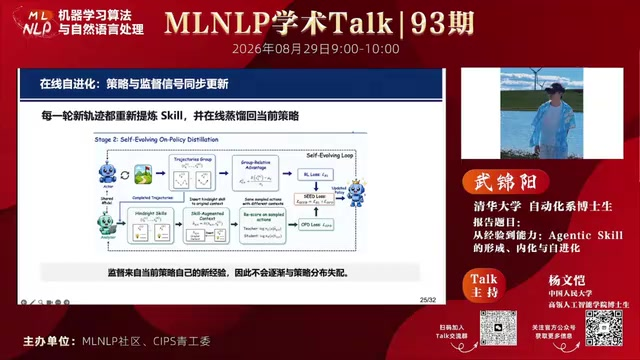
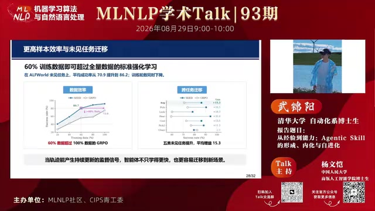
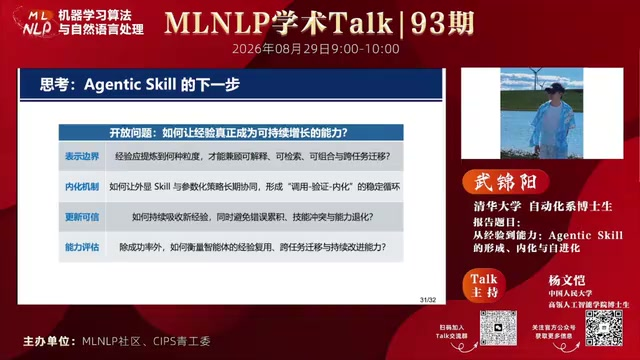

01核心结论
报告提出了一条完整的 Agentic Skill 能力演进路线：先把成功轨迹提炼成可复用的显式 Skill，再通过强化学习把 Skill 内化为模型参数，最后让 Skill 随当前策略产生的新经验持续更新，从而把智能体从“完成一次任务”推进到“从经验中持续学习”。
02核心观点
Agent 运行会产生大量轨迹，但轨迹本身既冗长又难以直接复用。报告把 Skill 定义为“从轨迹中提炼出的可复用策略单元”，并把它放在原始经验与模型能力之间：
- 对推理而言，Skill 压缩搜索空间，减少测试时反复采样的成本。
- 对训练而言，Skill 为策略探索提供高层指导，再由强化学习把外显提示变成参数化能力。
- 对持续学习而言，Skill 不能长期静止；它应从当前策略的新轨迹中重新提炼，并与策略同步演化。

三项工作依次回答三个问题：
| 阶段 | 工作 | 核心问题 | 关键机制 | 推理时是否仍需 Skill |
|---|---|---|---|---|
| 形成 | ThoughtICR | 学什么？ | 从具体样例和推理路径中提炼 Thought Cards，在测试时按问题属性调用 | 是 |
| 引导式内化 | TemplateRL | 如何学会？ | 用检索到的 Template 引导多组 rollout，再以 Dr.GRPO 联合优化策略 | 完整框架中仍保留 Template 检索与调用 |
| 在线蒸馏 | SEED | 如何越学越好？ | 从当前策略轨迹提炼 hindsight skills，并蒸馏到无 Skill 的普通策略分支 | 否 |
03内容脉络
1. 为什么需要 Skill：轨迹不等于能力（00:02:09–00:04:02）
随着模型和智能体能力增强，系统能积累大量交互轨迹，但“拥有经验”不代表“掌握能力”。真正的问题是如何把一次性的轨迹沉淀为可复用、可训练且可演化的知识。报告将这条路线拆为形成、内化和更新三个阶段，对应从外部经验到内部能力、再到持续进化的过程。
2. Skill 的形成：ThoughtICR（00:04:03–00:08:04）
传统 in-context learning 主要模仿具体示例；ThoughtICR 将复用层次从 example level 提升到 thought level。其目标不是记住某道题的答案，而是抽取一类问题共有的高层推理模式。

方法分为两步：
- 离线阶段对少量种子问题生成多条推理路径，按路径形式聚类，再把同类路径概括为 Thought Cards。
- 测试阶段根据新问题的属性检索匹配的 Thought Cards，让模型优先探索更有希望的解空间。
它与 test-time scaling 的关系是：后者靠大量采样覆盖解空间，ThoughtICR 则提前总结哪些区域值得搜索、哪些路径应避开。报告者的结论是，少量但高质量、抽象层次合适的 Skill，可能同时改善效果、效率和跨域泛化；数量越多并不必然越好。
3. Skill 的内化：TemplateRL（00:08:05–00:14:38）
外显 Skill 仍依赖上下文调用，而且不同策略模型对同一 Skill 的理解和执行能力不同。TemplateRL 因此先用 Skill 改善策略模型的探索分布，再通过强化学习吸收这些优质行为。不过，论文的完整推理框架仍包含 Template 检索与结构化 rollout，因此这里的“内化”更准确地说是 Skill 引导下的策略学习，而不是彻底摆脱外部 Skill。
离线阶段从 500 个种子问题出发，通过 MCTS 探索、拒绝采样和相似路径聚合，构建出 103 个可复用推理 Skill。

在线训练时，系统会为一个问题检索多个 Skill，用它们生成多样化轨迹并联合优化策略；新产生的正确轨迹还可以回流为新 Skill。论文默认采用 Dr.GRPO：每个问题采样 16 条轨迹，由 2 个不同 Template 提供引导，以 Math-Verify 的二元正确性作为奖励，并训练 500 步。Template 已经参与 rollout，所以 GRPO 优化的不是“去掉 Skill 后重新采样”的轨迹，而是 Template 改写过的探索分布。

这一机制提高了探索质量和训练效率，但也暴露出新的边界：当策略模型持续变化时，固定的 Skill 可能过时，甚至与当前策略分布失配。模型越强、更新越快，静态经验的边际收益可能越小。
4. Skill 的持续更新：SEED（00:14:38–00:21:28）
SEED 的关键转变是让监督信号也随策略更新：Actor 先在普通上下文中、不带 Skill 地产生轨迹，Analyzer 再复盘这些轨迹并提炼高层经验。每轮训练都从最新轨迹重新炼制 Skill，再把这些 Skill 在线蒸馏回无 Skill 的普通策略分支。

其训练包含两个阶段：
- 离线初始化：用少量标注数据进行冷启动，使模型先获得“从完整轨迹提炼工作流、关键观察和避错规则”的分析能力。
- 在线自进化：Actor 在普通上下文中生成轨迹；Analyzer 提炼 hindsight skills；系统将 Skill 插回原始上下文，对同一批已采样动作重新评分。带 Skill 的分支作为停止梯度的教师，无 Skill 的普通分支作为学生；普通强化学习损失与 OPSD（On-Policy Self-Distillation）损失加权，共同更新普通策略。

这套设计的核心不是建立一个永久不变的 Skill 库，而是维持一个闭环：新策略产生新经验，新经验形成新 Skill，新 Skill 再监督新策略。由于监督来自当前策略自己的轨迹，它比固定教师或固定经验更不容易发生分布失配。部署时模型只读取普通历史，不再需要 Analyzer、Skill Bank、检索模块或增强提示。
5. 补充辨析：Skill 引导学习，还是 Skill 真正内化？
上述讨论中的关键歧义，是“训练时使用 Skill”可能指两件不同的事：
- Skill-guided learning：Skill 改变 rollout 的生成分布，模型在这些更优轨迹上做强化学习，但完整推理系统仍可能继续调用 Skill。
- Skill distillation：Skill 只作为训练期教师信号，梯度被明确写入不带 Skill 的学生策略，部署时可以移除 Skill。
TemplateRL：本质上是 Template-guided RL
TemplateRL 属于前一种。它确实使用 GRPO 系列方法，而且多个 rollout 在生成时就已经受到不同 Template 的引导：
问题 + 检索到的 Template
↓
生成多组结构化 rollout
↓
Dr.GRPO 计算组内相对优势并更新策略
因此，“GRPO rollout 阶段已经利用 Skill”这一判断是对的；不能把它描述成训练前先去掉 Skill，再由模型独立探索。需要补充的是，参数更新并不自动等于推理时可以撤掉 Template：如果训练和部署都使用相同的检索增强上下文，就不存在输入分布突变；如果部署时突然移除 Template，则需要单独验证无 Template 条件下的能力保留。TemplateRL 论文还明确讨论了推理期的 Template 检索、结构化 rollout 和 test-time template expansion，所以其完整系统并未把外部 Template 完全去掉。参见 TemplateRL 论文。
SEED：Skill 只进入训练期教师分支
SEED 属于第二种。它先按普通策略采样动作：
轨迹结束后，Analyzer 才生成 hindsight skill s。同一已采样动作随后分别由两个条件重新评分：
其中带 Skill 的分支是停止梯度的教师，梯度只流向无 Skill 的普通学生分支。总目标为：
因此，SEED 在训练期刻意同时保留“有 Skill 教师”和“无 Skill 学生”，并让部署条件与学生训练条件保持一致。推理时可以去掉 Analyzer、Skill Bank、检索和增强提示，不会产生“训练只见过有 Skill 输入、推理突然无 Skill”的直接错位。参见 SEED 论文。
两者最关键的区别
TemplateRL：Template → 引导 rollout → GRPO 更新 → 推理仍可检索 Template SEED：普通 rollout → 事后提炼 Skill → 教师/学生蒸馏 → 推理只用普通策略
所以报告中的三阶段路线更严格地理解应是：ThoughtICR 研究 Skill 的显式形成与调用；TemplateRL 研究 Skill 如何改善强化学习的探索和更新；SEED 才给出了一个明确的、可在部署时移除 Skill 的在线蒸馏机制。
6. 报告展示的实验信号（00:19:46–00:20:39）
报告覆盖文本智能体、视觉规划和工具调用等场景。幻灯片重点展示：在 ALFWorld 未见任务上，SEED 使用 60% 训练数据时，平均成功率由 70.9 提升至 86.2，同时减少训练轮数；五类未见任务的平均增益标注为 15.3。这些结果被用来说明，持续更新的 Skill 不仅可能提高数据效率，也可能增强新场景迁移。

报告者还提出一个自然延伸：自进化不一定只发生在训练期。测试过程中也可以不断复盘先前轨迹，形成临时 Skill Bank，辅助后续样例，构成 test-time 的持续学习。
04问答环节的两个关键问题
Skill 是迁移能力，还是一类解题套路？（00:24:24–00:27:07）
答案取决于 Skill 的抽象粒度。规划、反思、长程错误检查等 capability-level Skill 较可能跨任务迁移；“遇到某物体先检查是否存在”之类与环境规则紧密绑定的 Skill，则更偏 task-specific。报告者认为，当前工作多数仍以任务或领域为中心，未来需要转向以能力为中心的 Skill 表示和评测。
自我提炼会不会导致策略单一和探索坍缩？（00:27:09–00:30:34）
报告者区分了两种风险：
- 在采样时直接用固定 Skill 约束模型，确实可能让探索空间过快收缩。可采用训练前期不启用 Skill 增强、同一问题检索多个不同 Skill 等方式保持多样性。
- SEED 的 Skill 来自当前策略实时生成的轨迹，实验中暂未观察到明显熵坍缩；但现有实验主要基于较小模型，在更大模型上的稳定性仍待验证。
同时，Analyzer 的抽象质量非常关键：若提炼结果过细、过于贴合单条轨迹，OPSD 会把局部模式反复写回策略；若能提取更一般的规律，收敛到狭窄策略的风险会减轻。
05实践建议、开放问题与研究边界
- 不要直接把日志当能力库。 先把成功与失败轨迹压缩成包含适用条件、关键步骤和避错规则的 Skill。
- Skill 库重质量与粒度，不重堆量。 过细会退化为案例记忆，过粗则失去操作性；应围绕“能否检索、组合、迁移和验证”选择抽象层次。
- 区分调用、引导学习与可独立部署。 Prompt 中能使用一条 Skill，不代表模型已经内化；即便 Skill 参与了 RL rollout，也不能据此推断推理时可将其移除。要证明“真正内化”，应在无 Skill 的学生分支上训练并报告无 Skill 推理结果。
- 让经验库带版本和反馈闭环。 策略变化后，需要重新验证、淘汰或更新 Skill，避免旧经验与新策略失配。
- 评估不应只有任务成功率。 还应衡量跨任务迁移、经验复用率、训练数据效率、探索多样性、错误累积和能力退化。
开放问题

- 表示边界：Skill 应细到什么程度，才能同时可解释、可检索、可组合并可跨任务迁移？
- 内化机制：外显 Skill 与参数化策略如何长期协同，形成稳定的“调用—验证—内化”循环？
- 更新可信：如何吸收新经验，同时避免错误累积、Skill 冲突和原有能力退化？
- 能力评估：除成功率外，如何衡量经验复用、跨任务迁移和持续改进能力？
研究边界
- 调用不等于内化。模型能在提示中使用 Skill，并不能证明该能力已经稳定写入参数或可在无 Skill 条件下独立部署。
- 持续更新存在副作用。Skill 的新增、修订与淘汰可能引入冲突、错误累积和遗忘，需要独立验证集与版本治理。
- 实验仍受设定约束。报告结果来自特定任务、模型和训练配置；跨模型、跨环境的长期收益仍需更多复现。